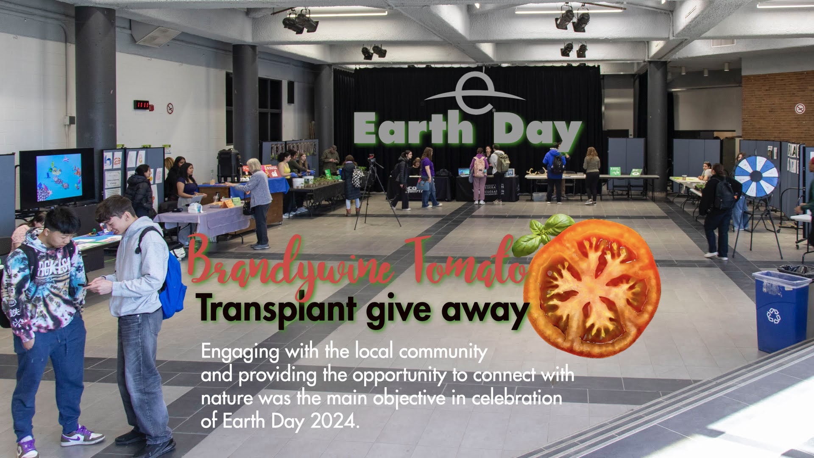
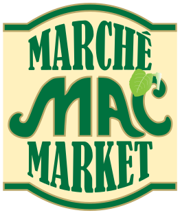
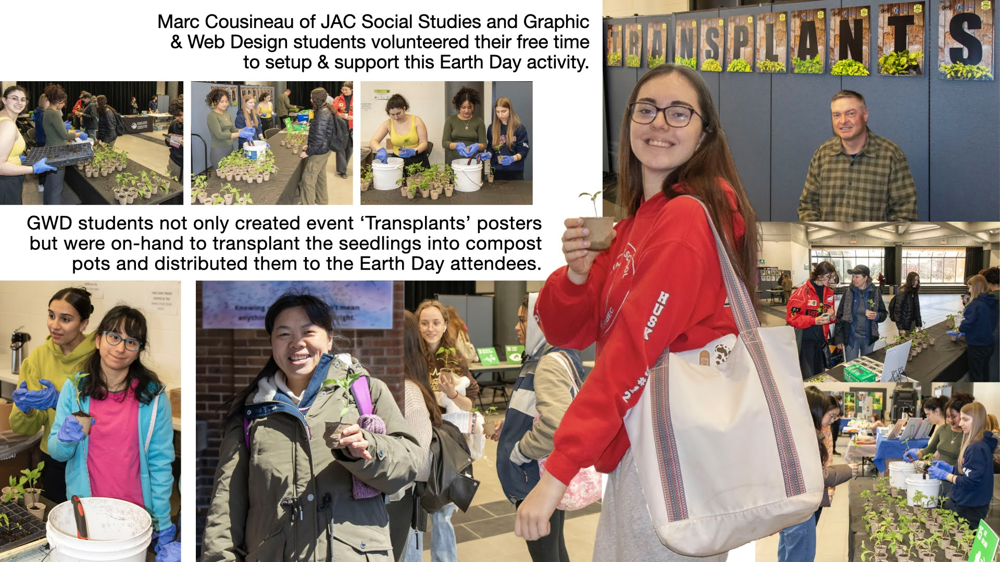
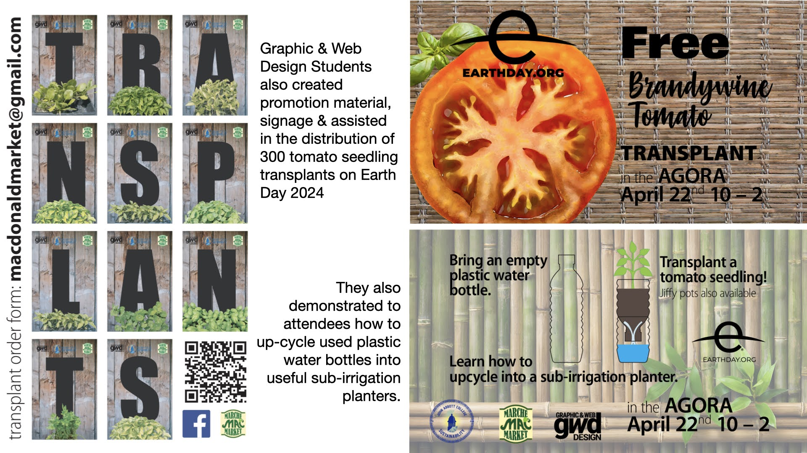
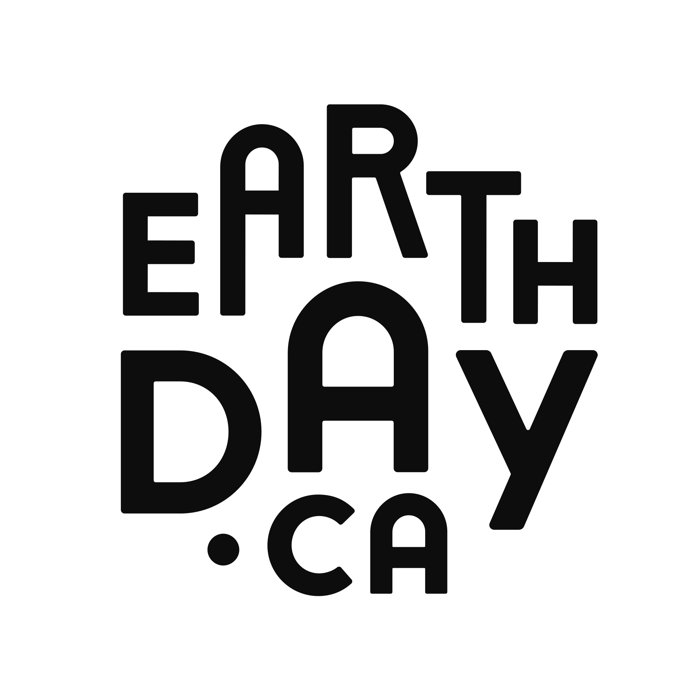

Brandywine Tomato
Transplant Give Away

Engaging with the local community and providing the opportunity to connect with nature was the main objective in celebration of Earth Day 2026.
Mac Market
Part of McGill University

The Mac Market, where the seedling plants were cultivated, is located on the McGill/Macdonald campus adjacent to John Abbott College. Over time it has evolved from a primarily horticultural research facility to a local agricultural source for fresh fruit & vegetables. It provides Macdonald & John Abbott residences and the McGill downtown food services with fresh local produce during the summer growing season through a program called McGill feeding McGill. It supports student communal campus gardens, and reduced cost incentives like the "Student Friday Basket".
In return for Mac Market's generous support for initiatives like this we promote the awareness of this facility on campus and on their Facebook page, "Marché Mac Market".
Graphic & Web Design
Student Participation

GWD students not only created event 'Transplants' posters but were on-hand to transplant the seedlings into compost pots and distributed them to the Earth Day attendees. Graphic & Web Design Students also created promotion material, signage & assisted in the distribution of 300 tomato seedling transplants on Earth Day 2024.
They also demonstrated to attendees how to up-cycle used plastic water bottles into useful sub-irrigation planters.
Transplant a tomato seedling!
Jiffy pots also available

Learn how to up-cycle into a sub-irrigation planter
In the AGORA
April 22, 2027 10am - 2pm
Brought to You By
